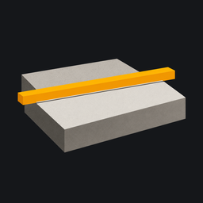

Screedline
Concrete and landscape quantities, with the working shown.
Built for concreters and landscapers. Pick your country and the app uses its units and the product sizes local suppliers stock: Australia, New Zealand, the UK, Ireland, the US and Canada, with generic metric sizes everywhere else. Big buttons you can use with gloves on and a Sun mode for full sunlight.
Concrete
Slabs with edge beams, footings, piers, steps and odd shapes, with your waste allowance.
Ordering
Truck loads in the plant's 0.2 m³ steps, premix bag counts and site-mix cement, sand and aggregate.
Steel and forms
SL mesh sheets with laps, bar chairs, N-bar laps and weight, trench mesh, form boards and pegs.
Ground
Falls as %, 1:n and mm with peg heights; pavers, bedding sand and road base; tonnes ↔ m³; retaining wall blocks.
Pour day
Evaporation and cracking risk for the weather, and a pour and curing checklist per job.
Jobs
Save calculations to a job on your phone and share a job sheet with your supplier.
Price
Free to download with the slab, truck order, bags, falls and tonnes tools. Try everything free for 7 days, then Full Unlock is one payment. No subscription, no ads, no account, and the app collects no data.